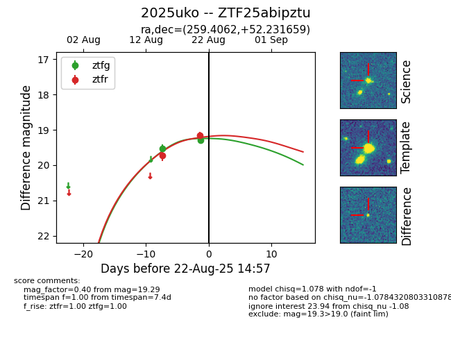

Target 2025uko at 2025-08-21 11:20, see:
FINK: fink-portal.org/ZTF25abipztu
Lasair: lasair-ztf.lsst.ac.uk/objects/ZTF25abipztu
ALeRCE: alerce.online/object/ZTF25abipztu
TNS: wis-tns.org/object/2025uko
YSE: ziggy.ucolick.org/yse/transient_detail/2025uko
alt names
ZTF25abipztu (ztf,alerce)
2025uko (tns,yse)
coordinates:
equatorial (ra, dec) = (259.4062,+52.23166)
galactic (l, b) = (79.4459,+35.26782)
photometry
last ztfg=19.29, ztfr=19.16
2 ztfg, 2 ztfr detections
